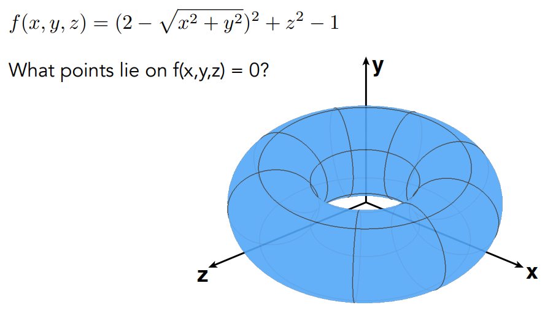

GAMES101课程笔记（四）——Geometry
引言
没想到第四篇内容的更新直接拖到了今年，最近几个月确实是挺忙的。
现在我们的主题来到了几何，这块内容主要有关于如何在计算机中表示和操作几何形体，并且会牵涉到不少数学知识，笔者也是希望这篇文章能够深入浅出地为各位读者解释清原课程中的内容，欢迎各位的阅读和批评指正。
前文指路：
GAMES101课程笔记（一）——Transformation
GAMES101课程笔记（二）——Rasterization
几何表示方式
现实生活中有很多几何物体，例如下图中各种形状的玻璃杯。
事实上，还有很多的几何形体，小到一滴水激起的涟漪，大到能够驶向宇宙的火箭，更复杂的还包括我们身着的衣物布料，肉眼所不能见的病毒，等等。
在图形学中，我们就需要研究如何使用计算机来表示这些几何形体，大体上我们可以将表示方式分为两类——隐式（Implicit）和显式（Explicit）。
隐式表示
隐式表示中，我们通过给出点所满足的关系来定义几何形体，例如我们知道，球面的一种表达是：
这其实就是一种隐式表示，即满足该等式的点就在球面上，反之就不在，可以看做是一种分类的思想。
在更一般的情况下，隐式表示通常能以下述形式给出：
隐式表示的好处显而易见，即给出空间中任意一点，我们可以很容易地判断它是否在面上（在形体内外）。
如下图中的示例，我们只要代入对应的参数，就能进行判断。
其坏处在于，有时我们很难从方程式看出它所表示的形状，例如下面的这个例子：

即当我们想要去找到在平面上的点时，会比较困难。
显式表示
与隐式表示相对，我们还有显式表示的方法，就是想办法表示出几何形状本身（例如顶点），例如我们之前所用的三角形面就是一种显示表示。
这里介绍另外一种显式表示的方法——参数映射。
参数映射给出一个从$(u,v)$坐标到$(x,y,z)$坐标的函数，我们只需要遍历$(u,v)$坐标，再结合映射函数，就能得到三维空间中的几何形状。
（这里的$(u,v)$坐标系为$[0,1]×[0,1]$）
显式表示的好处与坏处恰好与隐式表示相反，其优势在于容易找到所有在面上的点，例如：
因为$(u,v)$坐标系的范围固定，所以我们只要将所有的$(u,v)$坐标代入该式子，就能获得所有点，
反之，在判断某一点是否在面上时，由于我们不知道其对应的$(u,v)$坐标，就很难判断了：
目前并没有一个完美的几何表示方法，我们只能依据实际情况来选择表示方法。
更多隐式表示方式
CSG——构造几何实体
CSG是通过一些基本几何体的交并运算来表示其它的几何体，下图展示了CSG的三种基本运算：
通过对简单几何体的多次交并运算，我们可以获得我们想要的复杂几何体。
距离函数
该表示方法有点类似于求“中间状态”，但求的是我们定义的一个“距离函数”的中间状态。
为什么需要定义距离函数？我们可以通过下述例子来理解。
如上图，假设现在有两张图A和B，左边黑色的部分表示几何体，几何体A占据了左边1/3，几何体B占据了左边2/3的部分。
现在考虑如何求几何体A和几何体B的一个中间几何体，可以想象是几何体A像橡皮泥一样逐渐变为几何体B的过程中，某一个时刻的状态。
因此在结果图中，也应该是黑色占据了左边一部分，其余为白色。
但如果我们只是对A和B两张图进行线性插值，我们获得的结果是图右的样子，即左边1/3是黑色，中间1/3是灰色，右边1/3是白色，不符合我们的预期。
这是因为这么做差值求的是“图片”的融合，而不是图中几何体的融合，为了实现我们的目的，我们可以先定义距离函数，如下所示：
距离函数为空间中所有点定义一个到几何体表面的距离，在该例子中，我们就使用欧氏距离，同时在物体外为正距离，在物体内为负距离。
例如上图左，定义了图A空间的距离函数，黑色部分中的点距离全部为负，越靠左值越小；白色部分的点距离全为正，越靠右越大。
同理定义图B空间的距离函数后，我们将两个距离函数做线性插值，获得了一个全新的距离函数，然后我们再将该距离函数还原回几何体（在这个例子中，就是将负的部分涂黑，正的部分涂白），就实现了对几何体的融合（在该例子中，结果应是左边一半是黑的，右边一半是白的）。
总而言之，其具体步骤就是：
- 为几何体A和几何体B定义距离函数
- 对距离函数进行blend运算，获得新距离函数
- 将新距离函数还原为几何体
距离函数方法可以用于表达几何体之间的平滑过渡，下图中展示了一个方形和圆形在不同距离下融合的结果：
这里贴一个距离函数方法做的场景图：
水平集
这个方法其实和距离函数方法的思想完全一致，只是水平集方法不使用方程来表达函数，而是直接将距离存储在对应的网格中，如下所示。
原理其实是一样，只是在融合时，我们直接对每个网格做Blend运算，而不是对函数。
在结果中，我们可以找到那些邻接为一正一负的边缘，将它们视为距离为0的部分，从而还原出几何体。
其实敏感的读者可以发现，这与用纹理存储其他信息的方法如出一辙，这部分内容在GAMES101课程笔记（三）——Shading中有详细阐述，因而
我们也可以像纹理一样拓展该方法，比如定义三维的水平集等等。
以我们在前篇中提到过的医学CT场景为例，如果把扫描得到的密度存储为水平集（纹理），再取距离等于某个密度的点作为表面，就能看到不同密度组织的几何形状。
在物理模拟中，水平集方法也有很大的发挥空间，尤其是在气体和液体的模拟中：
分形
分形指的是那些，自己的一部分与自己的整体一样的几何体，也就是具有自相似性的几何体，如下所示：
分形可以用于描述很多自然界中的物体，由于自相似性的存在，它在各尺度下都具有相同的复杂程度，因此不会因缩放而丢失信息，不过也很难控制它成为自己想要的形状。
有关分形的内容其实挺复杂的，目前GAMES101也没详细涉及，看看以后有没有空写一篇博客吧（挖坑）。
更多显示表示方式
点云
点云用一系列的点$(x,y,z)$来表示几何模型，其原始形式类似于由点构成的一团云朵，故而得名（下图左）。
其最大的优势就是灵活，几乎任何几何模型都能用点云来进行表示，但如果点云的密度比较低的话，还是会丢失很多细节信息。
不过很多时候我们不会直接使用点云模型，而是先将点云转换为多边形面。
多边形面
多边形面应该是现在应用最广泛的一种显示表示方式，它存储几何体顶点和面（通常是三角形或四边形）的信息。
多边形面虽然要求更复杂的数据结构来进行存储，但比较容易进行处理，拥有非常广泛的适用性。
Wavefront Object File是一种常见的多边形面表示法的文件存储格式，文件扩展名为.obj，它用文本形式存储各种信息，如下所示。
这些信息包含顶点、法线、纹理坐标和它们之间的连接情况。
上图的例子表示了一个立方体，我们逐个介绍其含义。
可以看见其中有8个$v$项，记录了立方体8个顶点的坐标。
$vt$项代表纹理坐标，对于每个面，需要定义其4个顶点的纹理坐标，理论上最多有24个$vt$项，不过由于顶点会有共用纹理坐标的情况，这里就不足24个。
8个$vn$项表示的是立方体6个面的法向量，这里有8个是因为使用了自动建模，其实里面有重复的法向量，理论上6个就足够。
最后的$f$项说明了它们之间的连接关系，以5/1/1为例，这一项说明的是有这么一个顶点，它的坐标是$v[5]$，纹理坐标是$vt[1]$，法线坐标是$vn[1]$。而每一个$f$项中包含三个顶点，这三个顶点构成一个三角面。
Bezier Curve——贝塞尔曲线
曲线是几何中的重要元素，而在图形学中，贝塞尔曲线是非常常见的一种曲线，它由一系列的控制点来控制曲线形状。
例如上图中的贝塞尔曲线，它的起始方向由控制点$p_0$和$p_1$决定，结束方向由控制点$p_2$和$p_3$决定，至于中间部分是如何画出来的，接下来将详细介绍。
de Casteljau Algorithm——德卡斯特里奥算法
德卡斯特里奥算法是计算贝塞尔的曲线的常见方法，我们考虑用三个控制点来绘制贝塞尔曲线的情况：
（三个点的情况被称为二阶贝塞尔曲线）
我们的目标是这样的：这条曲线应从$b_0$出发，到$b_2$结束，然后$b_1$能影响这条曲线的形状。
我们可以假想这样的一个情况，我们从时刻0开始绘制，一直绘制到时刻1，只要知道当中每个时刻$t$时，我们该绘制的点在哪，那这条曲线就绘制完成了。
假设我们给定时间$t$，我们分别在线段$b_0b_1$和线段$b_1b_2$上，找到比例为$t$的两个点$b_0^1$和$b_1^1$，如下所示：
然后我们在线段$b_0^1b_1^1$上取比例为$t$的点$b_0^2$，该点就是$t$时刻时我们要绘制的点：
任何一个时刻的点都依此法进行计算，就获得了我们最终的贝塞尔曲线。
控制点数量更多的情况下，我们多次进行上述步骤，例如对于上图中四个点的情况，我们进行一次取点可以取到三个点（$b_0^1$，$b_1^1$和$b_2^1$），多次取点后就能取到最后的唯一点，从而构造出贝塞尔曲线。
代数形式
我们已经用直观的方式理解了贝塞尔曲线的构造方式，接下来我们从代数角度来理解贝塞尔曲线。
以四个控制点的贝塞尔曲线为例，我们刚才的绘制过程可以用下图来表示：
由于结果至于控制点和参数$t$有关，因此我们可以用这些参数写出曲线的完整表达式。
由于每次操作其实都是一次线性插值，因此我们可以很快写出一系列方程：
这就是二阶贝塞尔曲线的标准方程，对于更一般的情形，当贝塞尔曲线的阶数为$n$（控制点数目为$n+1$）时，其表达式为：
这就是Bernstein方程，不难看出这里的Bernstein多项式$B_j^n(t)$其实就是二次项系数，这从构造过程中就可以看出。
（毕竟这过程看着就像杨辉三角。。）
值得注意的是，这个表达式中的点$b_j$不一定限制在二维平面上，我们完全可以使用$R^3$中的点，用相同的公式来计算曲线。
Bernstein多项式也有一些特性，我们可以将它看作是1的二次项展开，因此对于任意时刻$t$，所有$B_j^n(t)$的和总是1，并具有对称性。
曲线性质
这里我们对贝塞尔曲线的性质做一个总结。
- 曲线一定过起始控制点和结束控制点（一般情况下中间的控制点都不在曲线上）
- 起始点和结束点的斜率容易计算（例如三阶贝塞尔曲线，起点斜率$b’(0)=3(b_1-b_0)$）
- 对曲线本身做仿射变换和对控制点做仿射变换是等效的
- 曲线一定在控制点形成的凸包中
凸包指的是能包围所有给定点的最小凸多边形，如下图中的蓝色部分：
注意最小这一条件，我们可以想象有一根很小的橡皮筋，用它保住所有的点后形成的形状就是凸包。
（话说每次听别人讲凸包说的都是这个例子，确实是直观形象）
逐段贝塞尔曲线
根据我们刚才介绍的方法，无论多少阶的贝塞尔曲线我们都能绘制出来，但当阶数高时，会有一些别的问题出现。
考虑上图中的10阶贝塞尔曲线，虽然我们绘制出来了，但这条曲线并不是很直观，比如中间的控制点是左右弯曲的，最终曲线却趋近于直线，难以控制。
因此就有了逐段贝塞尔曲线的概念，就是我们不将整条曲线看作是一个高阶整体，而是由多段低阶贝塞尔曲线连接而成。
最常用的就是用三阶贝塞尔曲线来进行拼接，如下所示：
这里只绘制了第一段曲线的四个控制点，为了方便观察，将曲线的起始和结束斜率也绘制了出来。
（Photoshop的钢笔工具也是这样的）
由于是逐段拼接，因此在曲线连接处可能会出现不平滑的情况，因此我们有一系列的连续规范。
最简单的连续性要求就是$C^0$连续，就是我们理解的“连在一起”，如下所示：
用数学语言描述就是$a_n=b_0$，即每条曲线首尾相连。
再高要求一点，我们可以使用$C^1$连续，这要求连接点必须是两侧控制点的中点，如下所示：
对应的数学等式为$an=b_0=\frac{1}{2}(a{n-1}+b_1)$，这能保证连接处的一阶导数连续，从而让曲线看上去更光滑。
按照这一思路，我们可以定义更高阶的连续性要求，也可以自行拓展要求，这就是使用控制点的灵活之处。
样条
虽然贝塞尔曲线很常用，但它并不是图形学中唯一常用的曲线，这里简单介绍一个概念——样条（spline）。
样条由一系列控制点控制，并且每一点都满足一定的连续性，可以说是贝塞尔曲线的父集。
上图展示了一种直观理解，我们在桌子上摆放好卡扣，然后用一根树枝穿过它们，树枝的形状就是一根样条，这些卡扣就是它的控制点。
有一种特殊的样条——B样条，是贝塞尔曲线的扩展形式，它相比贝塞尔曲线有更好的局部性。在贝塞尔曲线中，我们移动控制点会导致一部分的曲线发生变化，有些环境下我们希望更精细的操作，即控制点影响的范围更小的一点，这就是局部性。
不过B样条的内容非常复杂，本课程就暂不涉及更详细的介绍了，有机会就单独开篇博客吧。
（挖坑×2）
贝塞尔曲面
聊完了曲线，接下来就到曲面了，事实上贝塞尔曲线的思路可以沿用到曲面中，下图就是用贝塞尔曲面绘制的几何体：
贝塞尔曲面的控制点分布是二维的，例如我们可以像下图一样，用4×4个控制点来控制一块曲面：
贝塞尔曲面的输入是这4×4个控制点，而输出其实是一个[0,1]*[0,1]的矩阵，每个元素指明了曲面上点的位置，有点类似纹理。
下图展示了一个具体的求曲面过程：
当我们要求$(u,v)$处的点时，我们可以先求出4条$u$方向上的贝塞尔曲线，如图中的四条灰线。
然后我们再取这4条曲线在$u$处的点，将这4个点作为控制点，用参数$v$再求一次贝塞尔曲线，如图中的蓝线，这条曲线上$v$处的点，就是我们要求的点。
这里给出贝塞尔曲面计算过程的示意图：

在Making Things With Maths — Acko.net这个视频中，有关于这段绘制的具体描述，有兴趣的读者可以去看看。
网格操作
我们很多时候会使用网格模型（Mesh），针对于我们要使用的场景，需要对网格模型进行一些操作，下图展示了一系列的操作：
网格操作主要有三种：
- Mesh Subdivision——网格细分
- Mesh Simplification——网格简化
- Mesh Regularization——网格正则
接下来我们分别对他们进行解释。
Mesh Subdivision
有时候我们希望使用的模型更加精细，这时就可以使用网格细分技术，增多模型的面数，如下所示：
网格的细分并不是简单地将原本的面分解为小面，它同时还要改变小面的位置和角度，让模型更加光滑。
Loop Subdivision
这里插一嘴，Loop细分法的名字并不是因为该算法和循环有关系，只是提出者的家族姓氏就是Loop。。
Loop细分法沿用了我们刚才提到的两步思路，它做了以下操作：
将每个三角面分解为四个新的小三角面
依据权重为新的顶点调整位置
在调整位置的时候，Loop细分法对于原本存在的旧顶点和因细化的新顶点，采取不同的调整策略。
我们先讨论新顶点，从分解的过程中我们可以看出，新的顶点一定是某个三角面一条边的中点。
对于一般情况，这条边肯定是由两个三角面所共享的（边界情况我们这里就不考虑了），也就是应该是下图这种情况，图中的白点是新顶点。
那么该新顶点的位置应被调整为：
注意$A$和$B$是该新顶点所在边的端点，这里实际上是做了一个加权平均，至于系数为什么这么取，这里就不展开了。
旧顶点的位置更新稍稍复杂一点，在Loop细分法中，旧顶点的位置更新被认为与相邻旧顶点和自已的原位置有关系。
计算前我们需要引入两个参数，首先是顶点度数$n$，它指的是与该顶点连接的边的数目，例如下图中，中心顶点的度数就是6.
其次是权值$u$，其表达式为：
不过我在网上找到的表达式似乎是这样的：
可能闫老师介绍的方法略有不同吧，总之我们旧顶点的位置就调整为：
这里$p$指的是该顶点的旧位置，$\sum p_i$指的是与其邻接的所有顶点位置求和，从而获得我们的新位置。
实际应用中，Loop细分可以取得非常不错的效果。
Catmull-Clark Subdivision
Loop细分法非常好用，但其缺点也很明显，它只适用于三角面，一旦模型中包含其它种类的面就无能为力。
Catmull-Clark细分法能够处理各种形状的面，能够应对更加多的情况。
在具体介绍该算法前，我们需要先介绍几个概念，首先请看一张示例图：
图中画出了几个模型面，我们首先定义“非四边形面”，顾名思义，只要不是四边形面，就属于该类，如图中三角符号标识的两个面。
另外就是“奇异点”，指度数不为4的顶点，例如图中紫色所标示的两个顶点。（我们仍不考虑边界情况）
Catmull-Clark细分法增加顶点的方式是取中点，参见下图，这是上面这个例子细分后的样子。
具体而言，对于每个面，取面的中点和各条边的中点，再将面中点与各边中点相连（注意边中点之间不相连）。
例如原本的正方形面，都被重新划分为了四个面，三角面都划分为了三个新四边形面。
（这里已经经过了位置的调整，因此会出现弯曲，我们暂且不考虑新位置是如何计算出来的，只关注相对位置）
注意到进行一次细分后，奇异点数目增加至4，其中2个为新增奇异点，是原非四边形面的中点。
稍稍思考我们就能得到一个显而易见的结论：非四边形面划分后的中点一定是奇异点。因为其度数等于原面边数。
在不考虑边界情况的前提下，这个结论还能扩展为仅有这些点是新增的奇异点。
其实我们还能得到另一个结论：非四边形面划分后的新面一定全是四边形面。这意味着如果我们再做一次细分，奇异点数不会再增加，如下图所示：
接下来我们介绍点的位置更新方式，Catmull-Clark细分法更新位置时，更新以下三类点的位置。
第一类是面点，即四边形面的中心点，示意图如下：
对应的位置更新公式为：
第二类是边点，即四边形面的边中点，示意图如下：
对应的位置更新公式为：
第三类是旧顶点，示意图如下：
对应的位置更新公式为：
总结
Loop细分法只适用于三角面，而Catmull-Clark细分法可以用于更多类型的面，还是要根据实际情况进行选择。
这里贴上两种方法的效果图：
Mesh Simplification
假如我们的模型过于细致，为了减轻运算负担等目的，我么可以使用网格简化技术，减少模型面数，如下所示：
这里给个更具体的例子，下图展示了一个骷髅模型在拥有不同数量三角面时的情况：
如果单从显示效果来说，那无疑是越多三角面越好，但在现实中，有时为了提高渲染效率，我们会舍弃掉一部分模型精度。
考虑这个骷髅在使用时，实际大小不大的情况，就像图中的第二行所示，30,000和3,000个面的模型其实看不出什么区别，甚至300个面也并非不可接受，这就是网格简化技术的一个适用场景。
有关网格简化，我们只介绍一种方法——边坍缩（Edge Collapsing）。
边坍缩法的想法就是找到一条边，然后把它的两端聚合为一个点，就像下图展示的那样：
因此该方法的重点问题就是，该选择哪些边来进行坍缩。为此我们所采用的方法是二次误差度量（Quadric Error Metrics）。
考虑上图所示的情况，我们想要把这5个点降为3个点，两侧的点与原先重合，在选取中间那个点的位置时，我们就可以使用二次误差度量。
具体而言，我们计算这个点到原先四条边所在的直线的距离，也就是图右中蓝点到4条虚线的距离，然后求这些距离的平方和，这个平方和就是二次误差度量，我们最后确定的点应该尽可能地使这个值小。
二次误差度量和机器学习中的L2距离概念比较相似，如果有过相关经验的读者应该能马上理解。
回到我们的网格模型上，针对于每一条边，我们都可以通过二次误差度量，去计算它坍缩后的最优位置在哪，借此来选取要坍缩的边。
具体算法流程是这样的：
- 对每条边，计算二次误差度量，获得其小二次误差度量$m_i$。
- 迭代地从集合${m_i}$中取最小值对应的边，将其坍缩。
- 重复步骤2，直到模型符合要求。
这个算法中有两个细节需要注意。
首先是在步骤2中，当我们坍缩一条边时，其实会引起其它边的变动（可以参考前文中的坍缩例子），也就是说集合${m_i}$其实会在算法过程中变化，为了能够实时地更新该集合，同时满足取最小值的需求，我们可以用堆来维护该信息。
其次，我们的最终目的是简化整个模型的面数，但该算法其实是用局部最优来近似全局最优，也就是用了贪心策略，二者其实并不等价。不过在大多数情况下，该算法能取得很好的效果，所以我们就认为这么做是对的。
（图形学中流传着这么一句话，看起来是对的就是对的）
这里再看一下实际的效果图：
可以看到对于第一行中的牛，即使面数降到很低，该算法依然能维持模型的基本形状。
而第二行的小奶牛模型则验证了该算法更细节的一些特点：在面部形状本来就比较平坦的情况下，坍缩的边数也相对较多；在凹凸变化明显的连接处，坍缩的边就较少。
Mesh Regularization
网格正则指的是将原模型中的“奇怪”面变得更加规范化，例如下图中，将各种三角形面组成的模型转化为近似于正三角面组成的形状：
网格正则的内容课程中并没有详细涉及，这里也就不展开了。
那几何部分到这里也就告一段落，下次见！